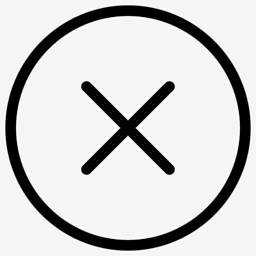
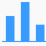

新闻
hao123
地图
视频
贴吧
学术
登陆
设置
更多产品
搜索设置
高级搜索
关闭预测
隐私设置
搜索设置
高级搜索

搜索框提示:
是否希望在搜索时显示搜索框提示
显示
不显示
搜索语言范围:
设定您所要搜索的网页内容的语言
全部语言
仅简体中文
仅繁体中文
搜索结果显示条数:
设定您希望搜索结果显示的条数
每页显示10条
每页显示20条
每页显示50条
百度的原始设定10条最有效且快速
实时预测功能:
是否希望在您输入时实时展现搜索结果
开启
关闭
搜索历史记录:
是否希望在搜索时显示您的搜索历史
显示
不显示
保存设置
恢复默认设置
请启用浏览器cookie确保设置生效，
登陆
后操作可永久保存您的设置
搜索结果:
包含以下全部的关键词
包含以下的完整关键词
包含以下任意一个关键词
不包括以下关键词
时间:
限定要搜索的网页的时间是
全部时间
最近一天
最近一周
最近一月
最近一年
文档格式:
搜索网页格式是
所有网页和文件
Adobe Acrobat PDF (.pdf)
微软 Word (.doc)
微软 Word (.doc)
所有格式
关键词位置:
查询关键词位于
网页的任何地方
仅网页中的标题
仅在网页的URL中
站内搜索:
限定要搜索指定的网站是
例如:baidu.com
高级搜索
扫码登陆
请使用
百度APP
扫码登陆
安全
高效
便捷
更多产品
糯米
音乐
图片
知道
文库
风云榜
全部产品>
百度
把百度设为主页
百度推广
About Baidu
关于百度
@2019
使用百度前必读
意见反馈
京ICP030173号
京公网安备11000002000001号

 知道
知道